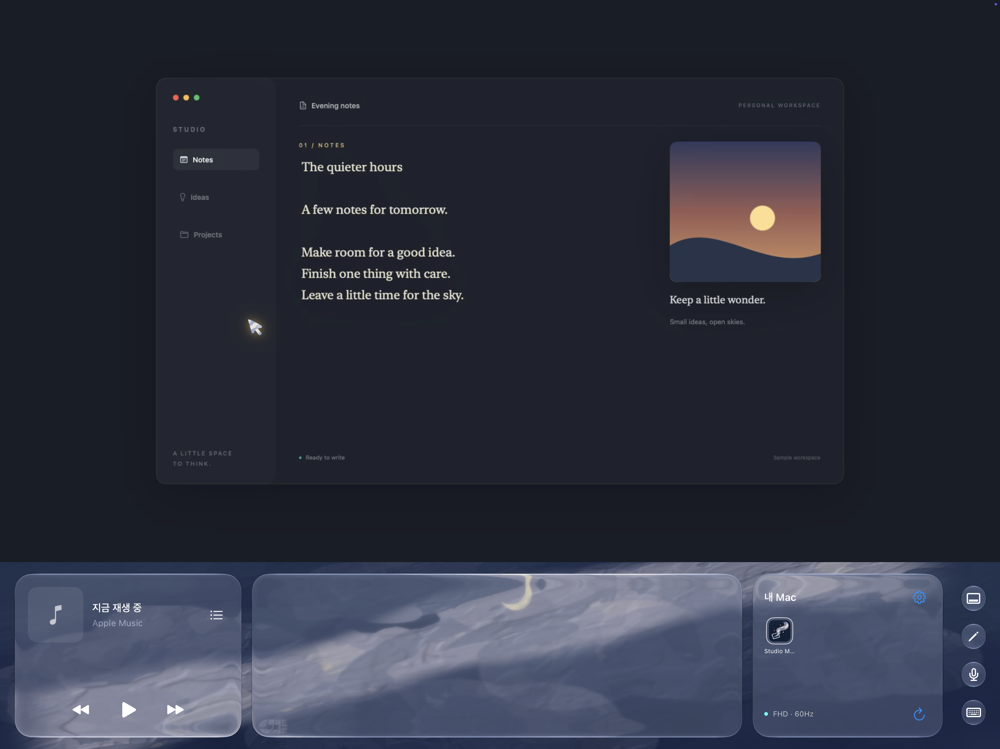

Your Mac, anywhere.
A little room to flow.
Your desktop above. A touch trackpad, music and a slowly moving painted sky below. Settle into your own space, wherever you are.
내 Mac을, 어디서나. 키보드와 트랙패드, 음악과 흐르는 유화 하늘을 iPad에 담았습니다.
Preparing for App Store release. US $4.99 once for iPad; the Mac companion is included at no additional cost. No Paddleway subscription.

Actual iPad app capture. The Mac is displaying an original sample workspace.
Your devices, together.
Sign in to the same Tailscale account on Mac and iPad. Choose your Mac and connect over an encrypted connection.
Make room for focus.
Use the touch trackpad and keyboard, or dictate a phrase into the active Mac app. Hide the panels to make the whole lower sky a trackpad.
Keep vibing.
Control your Apple Music system player while you work. The painted sky moves quietly behind clear panels.
Before you begin
Requires an Apple silicon Mac with macOS 15 or later, an iPad with iPadOS 17.4 or later, and a Tailscale account. Keep your Mac awake and online. Allow Screen Recording and Accessibility on the Mac. Network conditions affect frame rate and responsiveness.
Mac은 켜져 있고 인터넷에 연결되어 있어야 합니다. Tailscale의 별도 이용 약관과 요금제 조건이 적용됩니다. 음악 기능은 Apple Music 시스템 플레이어를 사용하며, Mac의 시스템 소리를 전송하는 기능은 포함하지 않습니다.